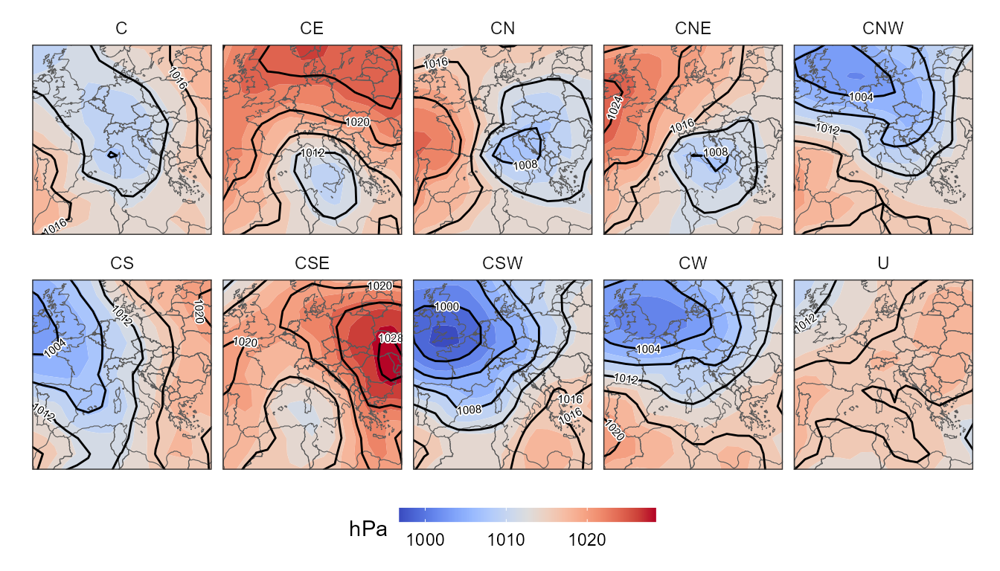

A simple example
synoptReg provides three functions to easily apply the automatic version of the Lamb classification, also known as Jenkinson and Collison.
The first step is to read mean sea level pressure data and then get the 16 coordinate points to compute the classification. get_lamb_points allows to compute theses points and plot_lamb_scheme to visualize them.
library(synoptReg)
library(tidyverse)
data(mslp)
mslp$value <- mslp$value/100 # Important: mslp in hPa.
points <- get_lamb_points(10,45) #centroid used for the 16-points grid computation
points
#> lat lon label
#> 1 50 25 P6
#> 2 45 25 P10
#> 3 40 25 P14
#> 4 55 15 P2
#> 5 50 15 P5
#> 6 45 15 P9
#> 7 40 15 P13
#> 8 35 15 P16
#> 9 55 5 P1
#> 10 50 5 P4
#> 11 45 5 P8
#> 12 40 5 P12
#> 13 35 5 P15
#> 14 50 -5 P3
#> 15 45 -5 P7
#> 16 40 -5 P11
plot_lamb_scheme(points) # plot lamb scheme
Once we computed these 16 points, we can use the lamb_clas function to perform the classification. The user can define if the undefined type (U) is desired (Jones et al., 1996) or not (Trigo and Dacamara, 2000). thr argument allows to select the threshold you want for total shear vorticity and total flow, to tune the frequency of the “U” type.
clas <- lamb_clas(points, mslp,U = T,thr = c(4.8,4.2)) # default c(6,6)
clas
#> $clas
#> # A tibble: 1,096 x 2
#> time WT
#> <date> <chr>
#> 1 2000-01-01 A
#> 2 2000-01-02 A
#> 3 2000-01-03 A
#> 4 2000-01-04 ANW
#> 5 2000-01-05 A
#> 6 2000-01-06 A
#> 7 2000-01-07 A
#> 8 2000-01-08 A
#> 9 2000-01-09 C
#> 10 2000-01-10 E
#> # ... with 1,086 more rows
#>
#> $grid_clas
#> # A tibble: 5,967 x 4
#> lon lat WT mean_WT_value
#> <dbl> <dbl> <chr> <dbl>
#> 1 -10 30 A 1018.
#> 2 -10 30 AE 1016.
#> 3 -10 30 AN 1018.
#> 4 -10 30 ANE 1017.
#> 5 -10 30 ANW 1019.
#> 6 -10 30 AS 1012.
#> 7 -10 30 ASE 1017.
#> 8 -10 30 ASW 1020.
#> 9 -10 30 AW 1021.
#> 10 -10 30 C 1017.
#> # ... with 5,957 more rowsPlot the synoptic maps is quite easy using ggplot2:
library(rnaturalearth)
library(metR)
borders <- ne_countries(continent = c("europe","africa"),
returnclass = "sf",scale = 50)
# Plotting only cyclonic weather types, including the U type
ggplot()+
geom_contour_fill(filter(clas$grid_clas, str_detect(WT, 'A|U')),
mapping = aes(lon,lat,z = mean_WT_value),bins = 15)+
geom_sf(data = borders, fill = "transparent")+
geom_contour2(filter(clas$grid_clas, str_detect(WT, 'A|U')),
mapping = aes(lon,lat,z = mean_WT_value),
binwidth = 4, color = "black") +
geom_text_contour(filter(clas$grid_clas, str_detect(WT, 'A|U')),
mapping = aes(lon,lat,z = mean_WT_value),
stroke = 0.15,binwidth = 4, size = 2, check_overlap = T) +
guides(fill = guide_colourbar(barwidth = 9, barheight = 0.5))+
facet_wrap(~WT, ncol = 5) +
scale_fill_gradientn(colors = pals::coolwarm(100), name = "hPa") +
scale_x_continuous(limits = c(min(mslp$lon),max(mslp$lon)), expand = c(0,0))+
scale_y_continuous(limits = c(min(mslp$lat),max(mslp$lat)), expand = c(0,0))+
ggthemes::theme_hc() + theme(axis.title = element_blank(),
axis.text = element_blank(),
axis.ticks = element_blank(),
legend.position = "bottom",
axis.title.x= element_blank(),
axis.title.y= element_blank(),
strip.background = element_blank())
References
Trigo, R.M.; DaCamara, C.C. Circulation weather types and their influence on the precipitation regime in Portugal. Int. J. Climatol. 2000, 20, 1559–1581, doi:10.1002/1097-0088(20001115)20:13<1559::AID-JOC555>3.0.CO;2-5.
Jones, P.D., Hulme, M. and Briffa, K.R., 1993: A comparison of Lamb circulation types with an objective classification scheme. Int. J. Climatol. 13, 655-663.